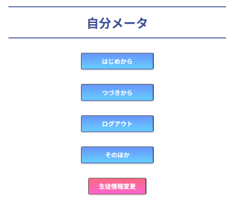

分析ツール

分析ツールの開発
- 期間 ：1年以上
- 使用言語 ：PHP SQl HTML JavaScript
- 制作理由 ：生徒が自分の精神的な強みや、弱みの対策を理解するため
- 特徴 ：簡単な診断で自分の現状が把握できる
【概要】
本プロジェクトでは、精神的な問題を抱えている生徒様の精神状態等を理解するための「自分メータ」と呼ばれるツールの、開発改善を4人1組のチームで行いリーダーとして進捗管理やチームメンバーのマネジメント、プログラミングを行いました。
教員様と生徒様の両方を対象に、支援を受けている生徒様という特殊なお客様に向けたツール開発となったため、よりお客様のニーズに合ったツールを作成していく必要がありました。
そのため依頼元の教員様とのメールでのやり取りやオンライン会議を行い、要件に沿った使いやすいツールを作成することを念頭に活動を実施し、お客様から好評を頂きました。